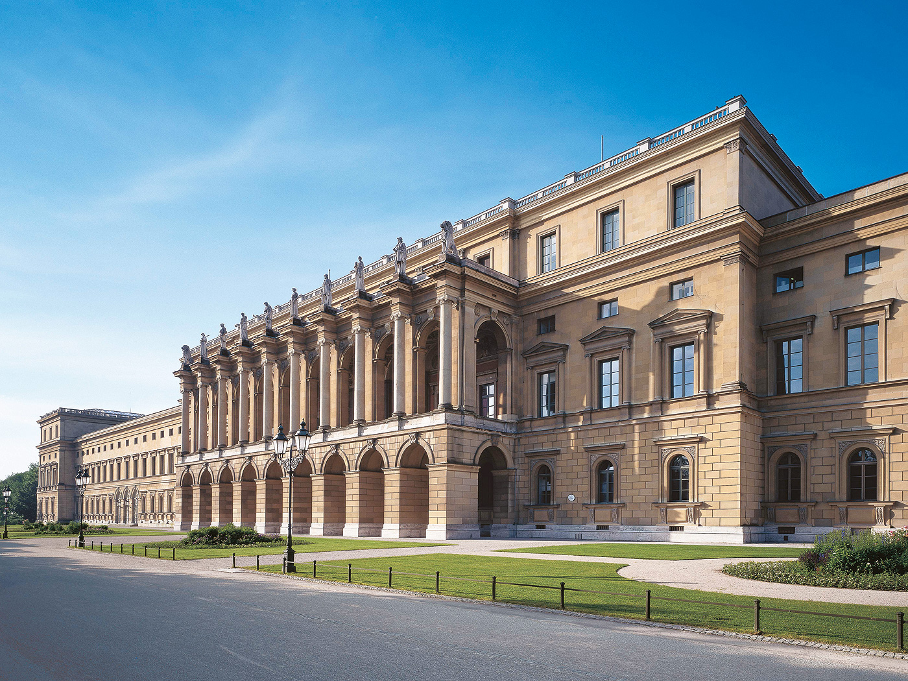
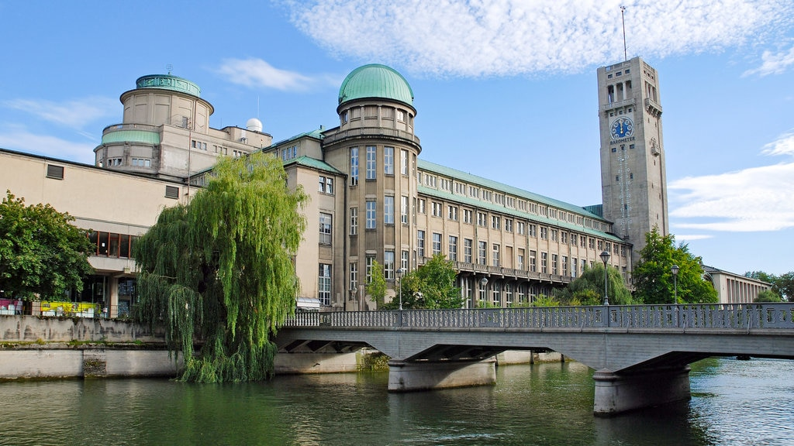
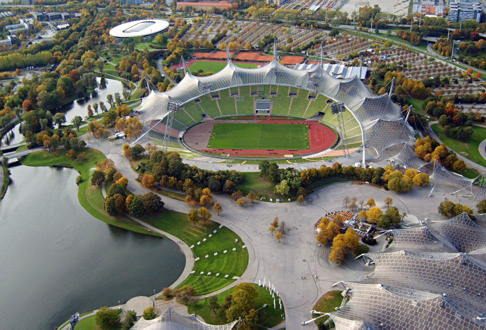
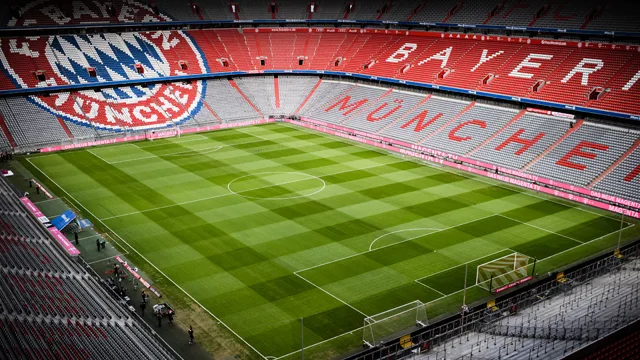
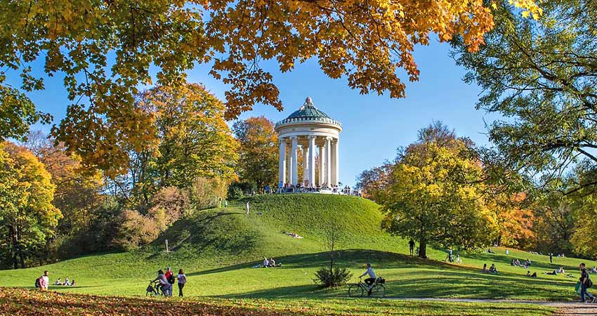
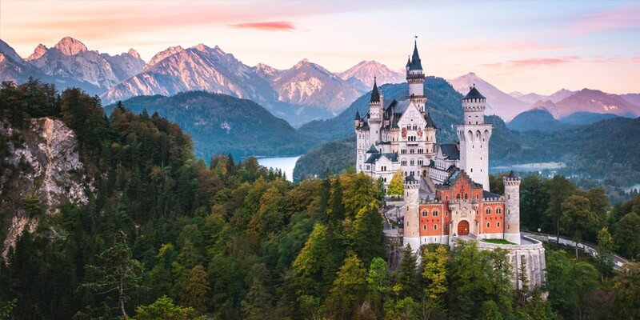
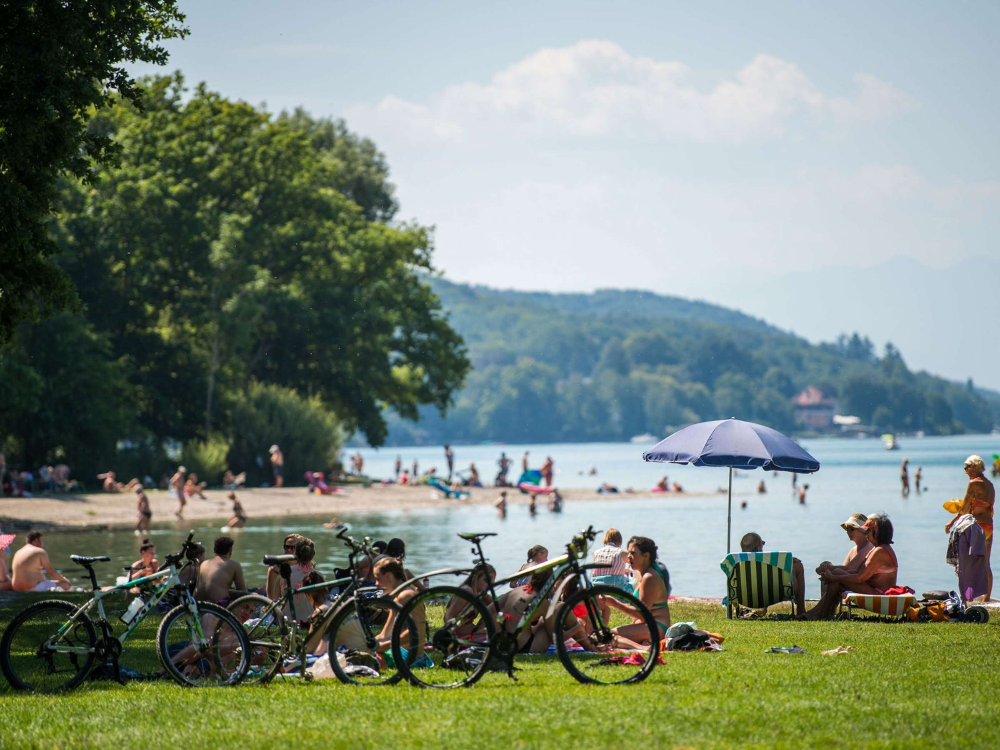
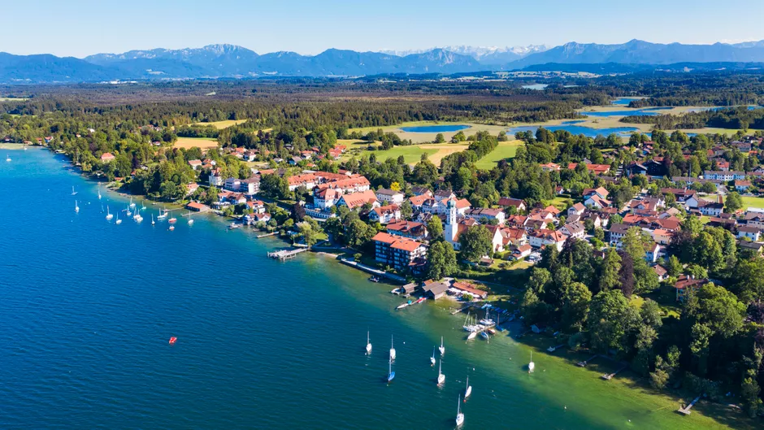

Atracciones de Munich - ¿Que hacer y a donde ir?
Conoce las principales e imperdibles atracciones de la ciudad
Residenz
El Residenz de Múnich es un majestuoso palacio ubicado en el corazón de la ciudad. Con una rica historia de más de 400 años, el Residenz fue el hogar de los gobernantes bávaros y un símbolo de su poderío. El palacio impresiona con su arquitectura barroca y rococó, así como con sus opulentas salas y jardines cuidadosamente diseñados. Hoy en día, el Residenz alberga museos, exhibiciones de arte y ofrece visitas guiadas, brindando a los visitantes una visión fascinante de la vida en la realeza bávara.
Deutsches Museum
El Deutsches Museum es el museo técnico más grande del mundo, ubicado en Múnich, Alemania. Alberga una extensa colección de objetos relacionados con la ciencia, la tecnología y la ingeniería, desde aviones y trenes hasta computadoras y herramientas. Sus exhibiciones interactivas permiten a los visitantes explorar y comprender los avances científicos y técnicos que han moldeado el mundo moderno. Además, el museo cuenta con un planetario y un centro de investigación para promover el interés y el conocimiento en estas áreas.
Olympia Park
El Olympia Park es un vasto complejo situado en Múnich, Alemania. Fue construido para albergar los Juegos Olímpicos de Verano de 1972. El parque cuenta con una impresionante arquitectura moderna y ofrece una amplia gama de actividades para los visitantes. Entre sus principales atracciones se encuentran el estadio olímpico, la torre de televisión con impresionantes vistas panorámicas, un lago artificial y extensas áreas verdes para disfrutar de paseos y actividades al aire libre. El Olympia Park se ha convertido en un popular lugar recreativo y cultural, acogiendo eventos deportivos, conciertos y festivales a lo largo del año.
Allianz Arena
El Allianz Arena es un icónico estadio ubicado en Múnich, Alemania. Es el hogar de uno de los equipos de fútbol más importantes del país, el FC Bayern München. Con su arquitectura distintiva y llamativa fachada exterior iluminada, el estadio es reconocido mundialmente. Tiene una capacidad para albergar a más de 75,000 espectadores y cuenta con tecnología de vanguardia, instalaciones modernas y una atmósfera vibrante durante los partidos. Además de los eventos deportivos, el Allianz Arena también acoge conciertos y otros eventos especiales, brindando una experiencia inolvidable a los aficionados y visitantes.
Englischer Garten
El Englischer Garten es un extenso parque público ubicado en Múnich, Alemania. Con una superficie de más de 900 hectáreas, es uno de los parques urbanos más grandes del mundo. El parque ofrece hermosos paisajes naturales con amplios prados, arboledas y arroyos. Cuenta con numerosos senderos para caminar, correr o andar en bicicleta, así como áreas designadas para hacer picnics y relajarse. Además, el Englischer Garten alberga el famoso Templo de Monopteros y un pintoresco lago donde se pueden alquilar botes. Es un lugar popular tanto entre los locales como los turistas, proporcionando un refugio tranquilo en medio de la ciudad.
Neuschwanstein
Neuschwanstein es un magnífico castillo ubicado en el estado de Baviera, Alemania. Construido en el siglo XIX, este castillo de estilo romántico se encuentra en lo alto de una colina, rodeado de un paisaje impresionante de montañas y lagos. Es conocido como el castillo de cuento de hadas y fue una inspiración para el castillo de la Bella Durmiente de Disney. Neuschwanstein cuenta con interiores lujosos, salas decoradas con exquisitos detalles y una gran cantidad de obras de arte. Es uno de los destinos turísticos más populares de Alemania y atrae a millones de visitantes cada año, brindando una experiencia mágica y fascinante.
Si visitas Munich en invierno: Patinaje sobre Hielo

Karlsplatz, ubicada en el centro de Múnich, ofrece una emocionante experiencia de patinaje sobre hielo durante los meses de invierno. En esta plaza histórica y vibrante, se instala una pista de hielo temporal donde tanto los residentes locales como los visitantes pueden disfrutar del deporte y la diversión del patinaje. Con sus luces brillantes y música festiva, la pista de hielo en Karlsplatz crea un ambiente encantador para deslizarse sobre el hielo. Tanto los principiantes como los patinadores más experimentados pueden disfrutar de esta actividad popular mientras se sumergen en el ambiente invernal de la ciudad. Además, cerca de la pista de hielo, se pueden encontrar puestos de comida y bebida para deleitarse con algo caliente y delicioso después de patinar.
Si visitas Munich en verano: Visitas a los lagos de Baviera
 El verano es una época maravillosa para disfrutar de la naturaleza y el agua. Los lagos de Baviera, como el lago Chiemsee, el lago Ammersee y el lago Starnberger See, ofrecen una gran variedad de actividades acuáticas y recreativas. Puedes nadar en aguas cristalinas, relajarte en playas de arena o tomar un paseo en bote para explorar los paisajes pintorescos. Además, los alrededores de los lagos ofrecen senderos para caminar, andar en bicicleta y hacer picnics. También puedes disfrutar de restaurantes y cafés al aire libre con vistas panorámicas. El clima cálido y soleado hace que el verano sea el momento perfecto para disfrutar de la belleza natural de los lagos de Baviera.